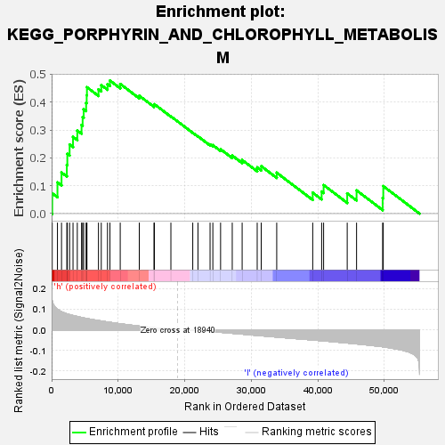

| | | Dataset | VCAN.VCAN.cls#h_versus_l.VCAN.cls#h_versus_l_repos |
| Phenotype | VCAN.cls#h_versus_l_repos |
| Upregulated in class | h |
| GeneSet | KEGG_PORPHYRIN_AND_CHLOROPHYLL_METABOLISM |
| Enrichment Score (ES) | 0.4775279 |
| Normalized Enrichment Score (NES) | 1.47312 |
| Nominal p-value | 0.066019416 |
| FDR q-value | 1.0 |
| FWER p-Value | 0.82 |
Table: GSEA Results Summary

Fig 1: Enrichment plot: KEGG_PORPHYRIN_AND_CHLOROPHYLL_METABOLISM
Profile of the Running ES Score & Positions of GeneSet Members on the Rank Ordered List
| SYMBOL | TITLE | RANK IN GENE LIST | RANK METRIC SCORE | RUNNING ES | CORE ENRICHMENT | | 1 | HMOX1 | na | 93 | 0.140 | 0.0728 | Yes |
| 2 | FTH1 | na | 877 | 0.100 | 0.1118 | Yes |
| 3 | UGT1A5 | na | 1488 | 0.088 | 0.1476 | Yes |
| 4 | UROD | na | 2286 | 0.078 | 0.1747 | Yes |
| 5 | MMAB | na | 2360 | 0.077 | 0.2145 | Yes |
| 6 | FECH | na | 2703 | 0.074 | 0.2476 | Yes |
| 7 | HMOX2 | na | 3215 | 0.070 | 0.2754 | Yes |
| 8 | UGT1A9 | na | 3858 | 0.065 | 0.2981 | Yes |
| 9 | ALAS1 | na | 4498 | 0.060 | 0.3183 | Yes |
| 10 | CPOX | na | 4659 | 0.059 | 0.3466 | Yes |
| 11 | UGT1A4 | na | 4812 | 0.058 | 0.3746 | Yes |
| 12 | ALAS2 | na | 5184 | 0.055 | 0.3973 | Yes |
| 13 | FTMT | na | 5268 | 0.055 | 0.4250 | Yes |
| 14 | BLVRB | na | 5307 | 0.055 | 0.4534 | Yes |
| 15 | UGT1A8 | na | 7039 | 0.045 | 0.4461 | Yes |
| 16 | GUSB | na | 7460 | 0.043 | 0.4613 | Yes |
| 17 | UGT1A10 | na | 8395 | 0.038 | 0.4647 | Yes |
| 18 | HCCS | na | 8762 | 0.036 | 0.4775 | Yes |
| 19 | EARS2 | na | 10308 | 0.030 | 0.4653 | No |
| 20 | HMBS | na | 13170 | 0.018 | 0.4230 | No |
| 21 | UGT2A3 | na | 15377 | 0.010 | 0.3884 | No |
| 22 | COX10 | na | 15446 | 0.010 | 0.3924 | No |
| 23 | UGT1A3 | na | 17919 | 0.003 | 0.3490 | No |
| 24 | UGT1A6 | na | 21205 | -0.001 | 0.2900 | No |
| 25 | CP | na | 21986 | -0.003 | 0.2774 | No |
| 26 | BLVRA | na | 23805 | -0.008 | 0.2485 | No |
| 27 | UROS | na | 24222 | -0.009 | 0.2456 | No |
| 28 | UGT2B4 | na | 25385 | -0.012 | 0.2309 | No |
| 29 | ALAD | na | 27137 | -0.017 | 0.2081 | No |
| 30 | PPOX | na | 28624 | -0.021 | 0.1923 | No |
| 31 | COX15 | na | 30886 | -0.027 | 0.1658 | No |
| 32 | UGT2B11 | na | 31490 | -0.029 | 0.1702 | No |
| 33 | UGT2B10 | na | 33818 | -0.035 | 0.1468 | No |
| 34 | UGT2B17 | na | 39227 | -0.050 | 0.0752 | No |
| 35 | UGT2B15 | na | 40567 | -0.053 | 0.0791 | No |
| 36 | UGT2B7 | na | 40863 | -0.054 | 0.1024 | No |
| 37 | UGT1A1 | na | 44409 | -0.064 | 0.0724 | No |
| 38 | UGT2B28 | na | 45814 | -0.068 | 0.0833 | No |
| 39 | UGT1A7 | na | 49731 | -0.082 | 0.0562 | No |
| 40 | UGT2A1 | na | 49825 | -0.083 | 0.0985 | No |
Table: GSEA details [plain text format]
Fig 2: KEGG_PORPHYRIN_AND_CHLOROPHYLL_METABOLISM
Blue-Pink O' Gram in the Space of the Analyzed GeneSet
Fig 3: KEGG_PORPHYRIN_AND_CHLOROPHYLL_METABOLISM: Random ES distribution
Gene set null distribution of ES for KEGG_PORPHYRIN_AND_CHLOROPHYLL_METABOLISM